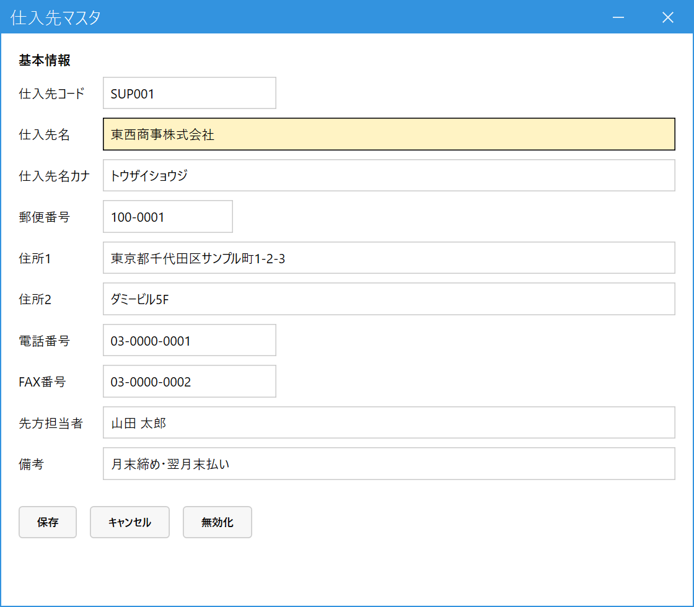

仕入先を登録する（仕入先マスタ）
こんなときに使います
商品を仕入れる取引先（仕入先）を登録します。登録した仕入先は、次の3か所で使います。
・商品マスタで、商品の主仕入先を選ぶとき
・仕入先／商品／原価マスタで、仕入先ごとの原価を登録するとき
・受注入力・売上入力の明細で、仕入先を選ぶとき（選んだ仕入先の原価が、粗利の計算に使われます）
商品を仕入れる取引先（仕入先）を登録します。登録した仕入先は、次の3か所で使います。
・商品マスタで、商品の主仕入先を選ぶとき
・仕入先／商品／原価マスタで、仕入先ごとの原価を登録するとき
・受注入力・売上入力の明細で、仕入先を選ぶとき（選んだ仕入先の原価が、粗利の計算に使われます）
この画面は、原価と粗利をたどるための登録です。仕入や支払の管理は、このシステムではしません。
1.仕入先を登録する
メインメニューの「マスタ管理」の中の「仕入先マスタ」を開きます。
- 新しく登録する：仕入先コード欄に新しいコードを入れて Enter。「未登録です。新規登録として入力してください」と出るので、そのまま入力します。
- 登録済みの仕入先を直す：コードを入れて Enter、または Space で検索して選びます。コード・名称・カナ・先方担当者の一部で絞り込めます（検索画面では、入力後に Enter で一覧へ移動、もう1回 Enter で決定）。

- 仕入先コード：必須。自社で付ける管理用のコードです。
- 仕入先名・仕入先名カナ：仕入先名は必須。カナは検索に使います。
- 郵便番号・住所1・住所2：任意。
- 電話番号・FAX番号・先方担当者：任意。先方担当者は検索にも使えます。
- 備考：任意のメモ（締め日・支払条件など）。
- 保存で登録。やめるときはキャンセル（入力を消して最初の状態に戻ります）。使わなくなった仕入先は無効化します。
2.保存する
- 仕入先コードと仕入先名を入れ、保存を押します。
- 「○○ を保存しました。」と出て、画面は空に戻ります（新しいコードの登録も、登録済みの内容の修正も同じ操作です）。
- すでに登録されているコード（無効化したコードも含む）では、新しく登録できません。
- 文字数の上限を超えると、「○○は○文字以内で入力してください」と出て、保存されません。
- ほかの人が先に同じ仕入先を変更していたときは、警告が出ます。もう一度読み込んでから直してください。
3.使わなくなった仕入先を無効化する
仕入先を読み込んで無効化を押し、確認のメッセージで「はい」を選びます。無効化した仕入先は、商品マスタ・原価マスタ・伝票の明細で選べなくなります。
- 過去の伝票には、その仕入先がそのまま残ります（売上・粗利分析の仕入先別にも、名前つきで出ます）。
- 仕入先ごとの原価（仕入先／商品／原価マスタ）の登録が残っていても、無効化はできます。
有効な商品が「主仕入先」にしている仕入先は、無効化できません。「この仕入先を主仕入先に指定している商品があるため無効化できません。先に商品マスタの指定を外してください。」と表示されます。該当する商品を商品マスタで開き、主仕入先を空欄（または別の仕入先）にして保存してから、もう一度無効化します。